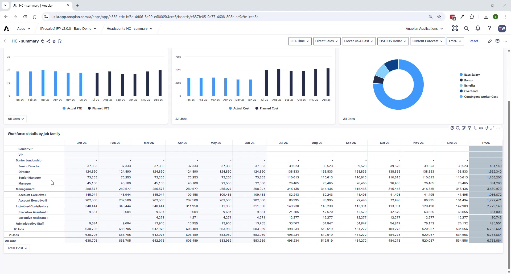
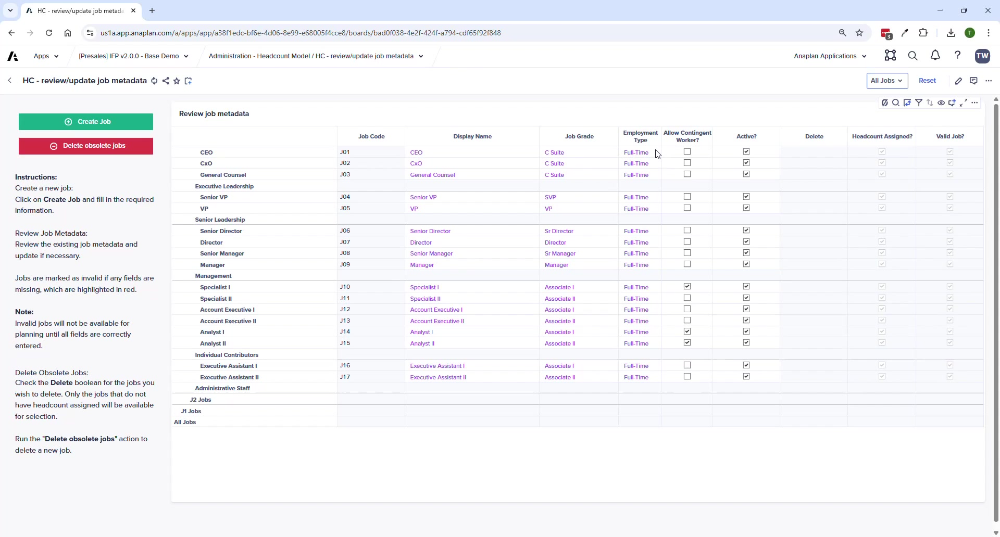
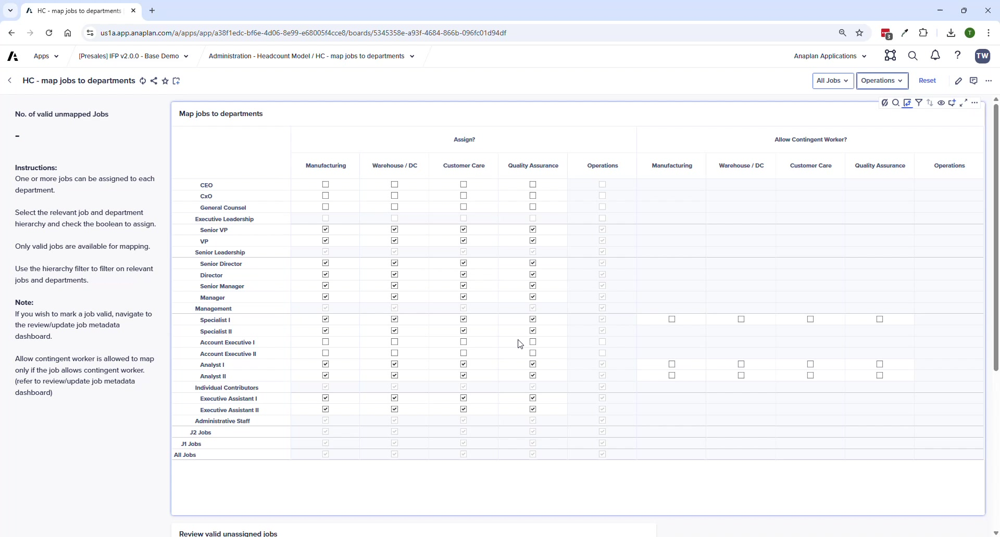
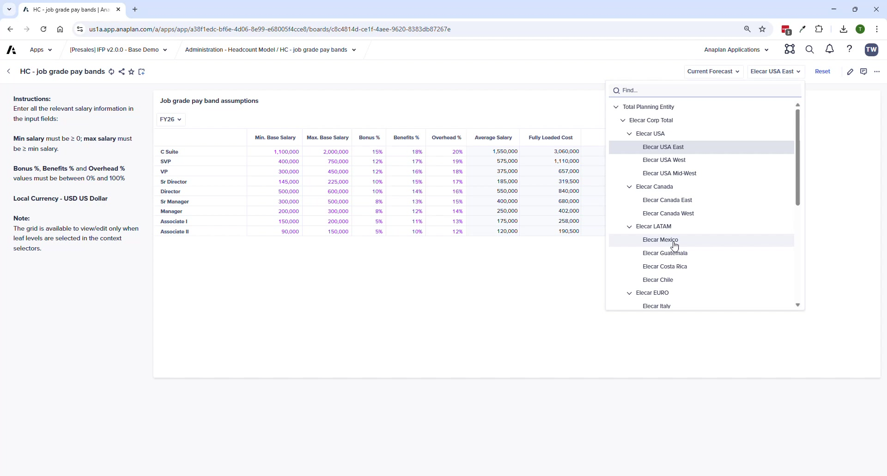
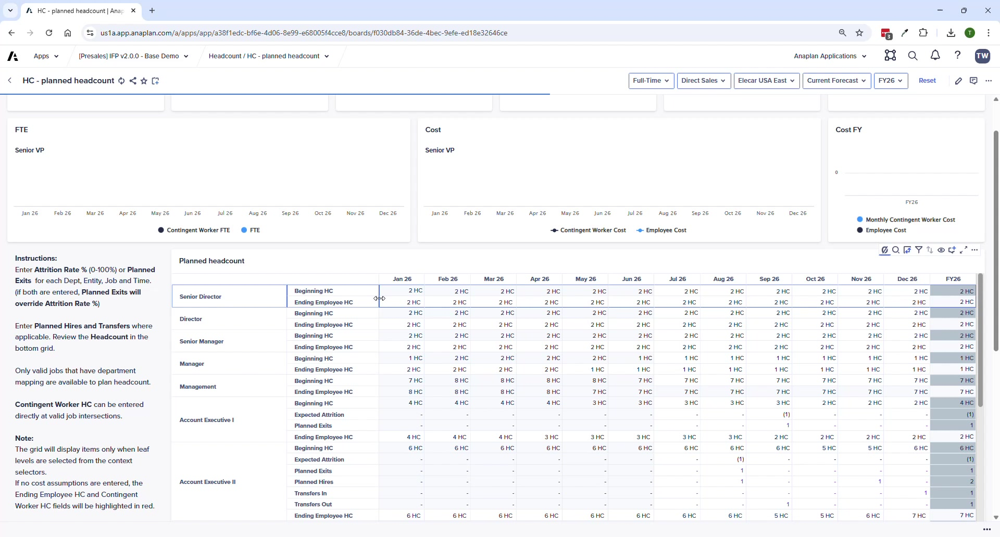
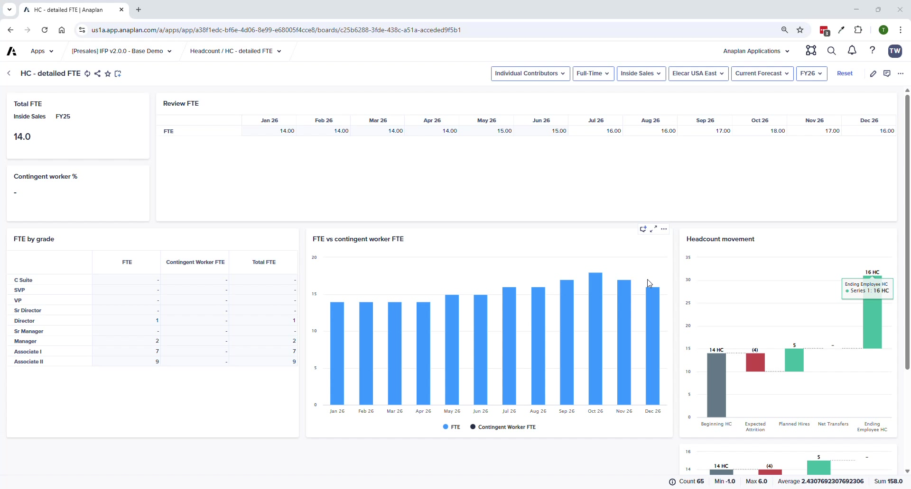

Headcount Planning
Job-level workforce planning — setup sequence, pay bands, planning inputs, and cost sync to FP
IFP v2.0 HC plans at the job role level — no named employee data. For position or employee-level detail, use OWP (Operational Workforce Planning) or WFB (Workforce Budgeting), both of which integrate natively with IFP.
Setup Sequence
- Configure Job Metadata (create jobs, set grades, employment types, active flag)
- Map Jobs to Departments (define which roles exist in which departments)
- Set Job Grade Pay Bands (compensation guardrails)
- Map GL Accounts (connect HC costs to FP accounts)
- Enter Job Cost Assumptions (specific costs per job per department)
- Plan Headcount (hires, exits, transfers, attrition by month)
Job Metadata


Required fields for a valid job: Job Code · Display Name · Job Parent · Job Grade · Employment Type · Active = TRUE. Jobs with missing fields are marked Invalid and won't appear in planning grids.
Job to Department Mapping
- Monitor: Number of Valid Unmapped Jobs KPI — goal is zero
- A job can be mapped to multiple departments
- Allow Contingent Worker checkbox only unlocks when: (1) job is Assigned to dept AND (2) Allow Contingent Worker = TRUE globally on the job
Job Grade Pay Bands

- Set min/max base salary per grade (company-wide guardrails)
- Bonus %, Benefits %, Overhead % as percentage of salary
- Regional differentiation by entity supported (different rates per country)
- System validates entries — max must be ≥ min; percentages must be 0–100%
GL Account Mappings
- Map each HC cost category (salary, bonus, benefits, overhead, payroll taxes) to a leaf-level GL account
- Parent-level GL accounts trigger red validation errors
- Incorrect mappings push costs to wrong OpEx categories when imported to FP
Headcount Planning



- Manual entry: Hires · Exits · Transfers In/Out — by month for plan period
- Attrition is assumption-based (parameter), not manual
- Use suppression to show only jobs with headcount
- KPI cards and charts update at top of page as you enter data
Sync to FP
After planning: Administration → Financials Model → FIN – Import from HC Model. This pushes all HC workforce costs into the correct OpEx accounts in FP.
Pay bands can vary by entity — useful for international organizations where the same job grade has different compensation levels by country (e.g., India vs. US rates for the same role).